Yesterday we checked out of Azure. The young person who checked us in escorted us outside to bid goodbye. He asked if our hotel needs were met — I think no, not exactly — and said yes. He then said when we get a request from Booking.com to rate the hotel, to give them — and he puts up both hands (as if to say a 10 rating?) — I think not gonna happen, and said yes. I'm actually fond of this place and already said that I would stay there longer, but there's a not-short list of things they can improve on, like: clean the refrigerator door, clean the elevator inside and out, get rid of the smaller-than-a-square-foot shaggy bathroom rug that does nothing, don't take away our face towels (that we had to ask for) and then not replace them with new ones, install a brighter light bulb in the bathroom. Those are all very doable, even for a 2-star hotel. They have to entirely gut their bathroom shower floors though. How on earth do they expect water to drain into the drain when the floor is level?! Madness.
The driver arrives early and drives us to the train station just 10 minutes away. We were both looking forward to this, and now I'm kinda embarrassed to write about it.
At age 62, I'd not been on a train, ever, for any distance. There's supposedly a nice train ride along the California coast where we live, and I recently tried to book one for work but it ended up not working out. So, to get from Nha Trang to Quy Nhon, a viable option, especially for Thomas's post-surgery recovery, is a train ride rather than a car ride. The Vietage pops up in my search. You look at their website and tell me if that's not nice. It's fancy and luxurious, the kind of fancy that is foreign to my life and Thomas's life. Oh, but this would be amazing, a trip of a lifetime. We're gonna do this! Yes, Thomas deserves this! I fucking deserve this even more because I live in stress and worry! It's gonna be expensive, but you know it's Vietnam, so it must not be that expensive. Then I saw the price and it was oh-fuck-me-kind-of-expensive — I yelled it out to Thomas, and he yelled back, "Oh, forget that!"
It would cost 975 American dollars for two one-way tickets, and "the travel time for the journeys between Nha Trang and Quy Nhon is approximately 5 hours each way." I made a quick decision with this line of thinking: Azure hotel is dirt cheap; I've never been on a train and this would be a perfect first trip; Thomas would have to be in a car for 6 hours if we don't do this; my eyeballs have been hurting from working nonstop so I deserve this. I clicked purchase. In the confirmation email, I learned that the trip is 4 hours, not 5 as stated on their FAQ page. Mind you, I've already done the hourly rate, and now the expensive experience just costs 25% more because of false advertising. I let them know that and straight up asked for a 25% refund, since I view it as paying for a 5-hour massage and getting only 4 hours. They very politely said no and offered a sleeper booth in addition to our two seats. They also increased our 15-minute massages each to 30 minutes each. Fine, whatever. Jesus, we're in Vietnam, where a bowl of yummy anything is less than 3 bucks, and this train ride is gonna cost us $250 an hour! And if you think this is not expensive, then fuck you. We are not friends.
As the driver pulls into the train station, I already saw a lovely young lady with Ngọc on her name plate, in the elegant áo dài, holding up the Vietage sign. She greeted us (like how does she know what we look like) and escorted us inside, where she immediately serves us cold face towels, freshly pressed orange juice, and sparkling wine. Nice, the pampered treatment was immediate, and we still have an hour before boarding. We were told to arrive at the station 45 minutes early. There were other passengers there, all Vietnamese as far as I can tell, but Ngọc did not attend to them. Right away then I knew they were riding the "regular" train and we get the champagne one. With 30 minutes until boarding, I tell Thomas that we must be the only two people taking the Vietage, since Ngọc is not pouring sparkling anything to anyone else. Again, it is expensive, so I can understand that we'd be the only two dummies to do this.
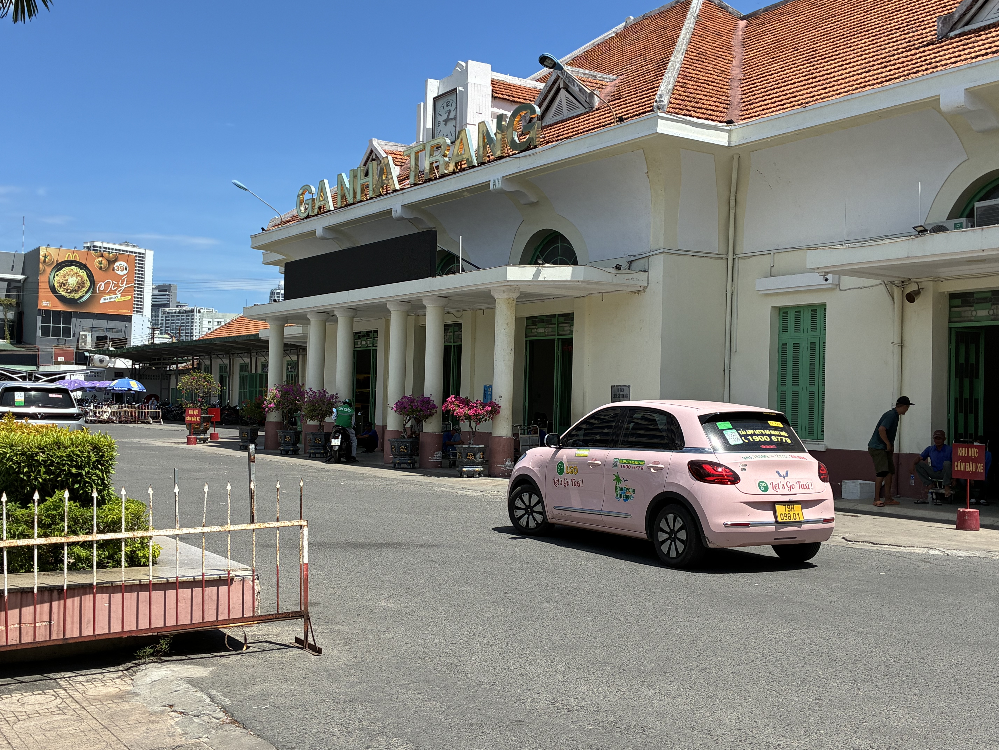
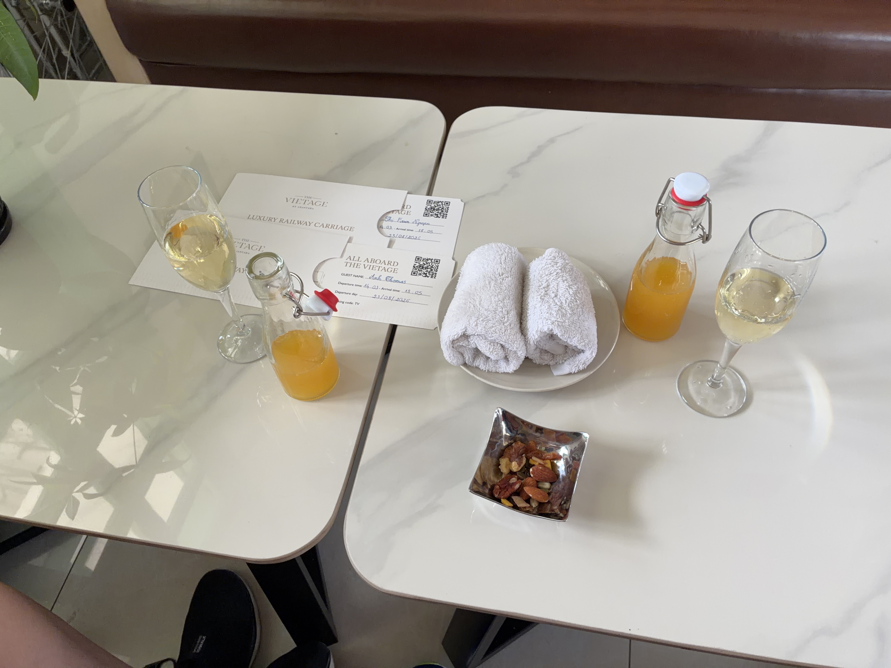
Wait. They are going to run a whole train for just the two of us? That's preposterous! I know the train only holds 12 passengers, but still. There must be other passengers already on board then from the last segment. Right? It's almost time to board and the man sitting near us opens up his ticket to check, and I heard him say that his boarding time is 2:05. That's our boarding time too! How does this work? I mean, I know we share the same train tracks, but for the Vietage and the regular train to share the same departure time... like is one immediately after the other? Must be.
Ngọc signals it's time and we follow her out. Everyone else starts to board too, except they don't have to follow Ngọc. Do you now know why I'm embarrassed to write about this? We're on the same fucking train as everyone else, except our caboose, cabin, or whatever the fuck you want to call it, is at the very end. I thought the Vietage is its own train, the same way that I thought we'd get a different private jet, when in reality we are just sitting in the "first class" cabin. OMG, I'm beyond dumb and naive.
I'll start with two and only two positives: 1. Ngọc was attentive and polite. 2. The small bite of lobster and caviar (from Đà Lạt).
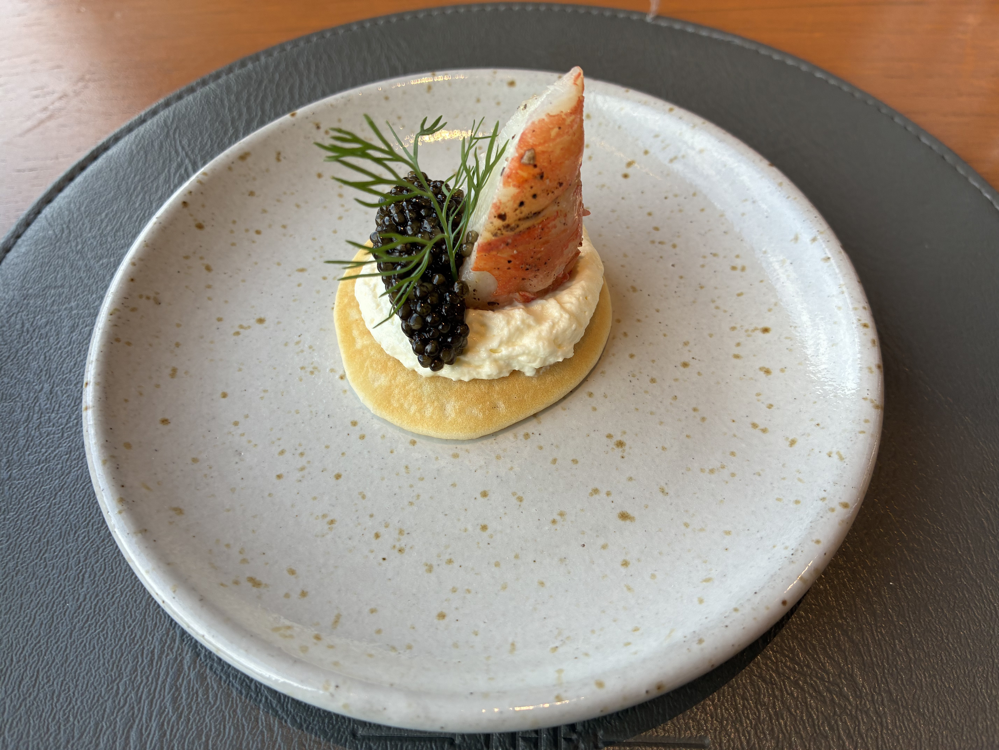
The rest was all made-up luxury. The printed programs on thick, nice paper, handwritten notes, individual baskets full of comfort items like slippers, neck pillows, toiletries, 8 varieties of finger foods, free-flowing beverages. I only drank tea, and Thomas had 1 glass of red wine. We didn't touch any of the desserts. Thomas declined his massage, as his body is still healing. Ngọc gave me a nice massage, but it was the sitting-up type that actually hurt my neck from resting on the headrest. By the way, she did 90% of the work. The two gentlemen were pretending to work, making sandwiches and tea. For her sake, I'm glad we're the only 2 people. I'd hate to give 12 people neck massages for 15 minutes each — that's 3 fucking hours on a 4-hour trip — and also serve them all the food and drinks. The ride was rough during the last hour, way bumpier, and I was getting a headache from it. Glad we had the sleeper so I could lie down. Ngọc was also the one walking us out, dragging our two suitcases. And being the last cabin, we had the longest walk. Thomas asked me, because he already knew the answer, "Was it worth it?" It was not even worth 100 bucks for the whole thing.
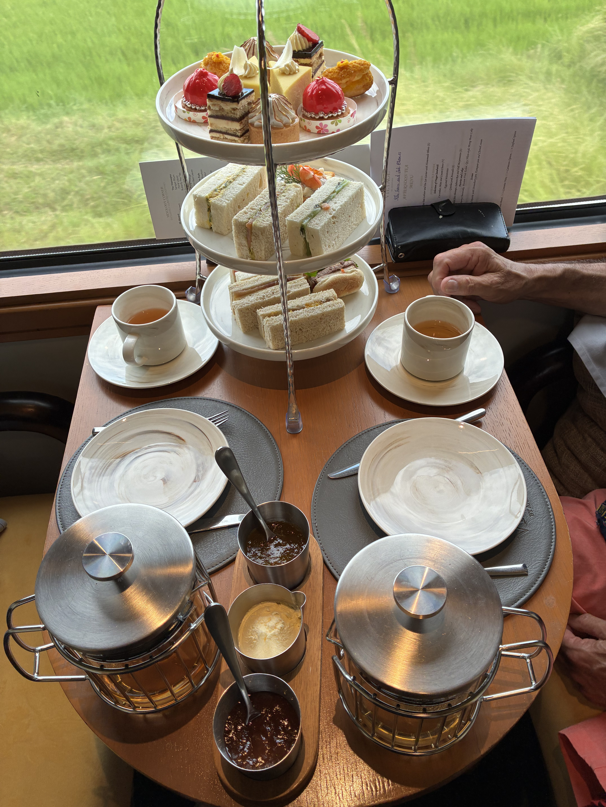
The driver was waiting and took our luggage from Ngọc. It's evening now and we notice all the stores are dimly lit. Like the barber shop and restaurants and pharmacies. I almost understand this. You're conserving energy, and the light would only add more heat to the hot weather. About twenty minutes later, we arrive at Sala Quy Nhon Beach Hotel. The spacious lobby is a nice welcome after Azure. I immediately notice a giant vase of fresh Casablanca lilies and a full-size indoor plumeria tree. In Vietnam hotels, you approach the counter with your passport and visa, then you sit down and enjoy a cold face towel and cold drink while you wait for them to process your arrival. The young lady goes over the checklist of amenities and rules with me. The first thing she said was that we got a free upgrade to a suite! Like what stupid train ride? I don't recall.
You are fined here, not just for smoking in the room, but also for bringing in stinky fruits like durian or even strongly fragrant ones like jackfruit. Well, the room is magnificent. It's the same one you first see on their website. Wraparound patio. The hardly anyone-on-it expansive beach just across the street. We intentionally booked the longest stay here, 6 nights, to see if this is where we might want to spend retirement. We've been searching, and Quy Nhon comes up time after time for fishing and quiet peace. We are in love already. It's Day 1 here.
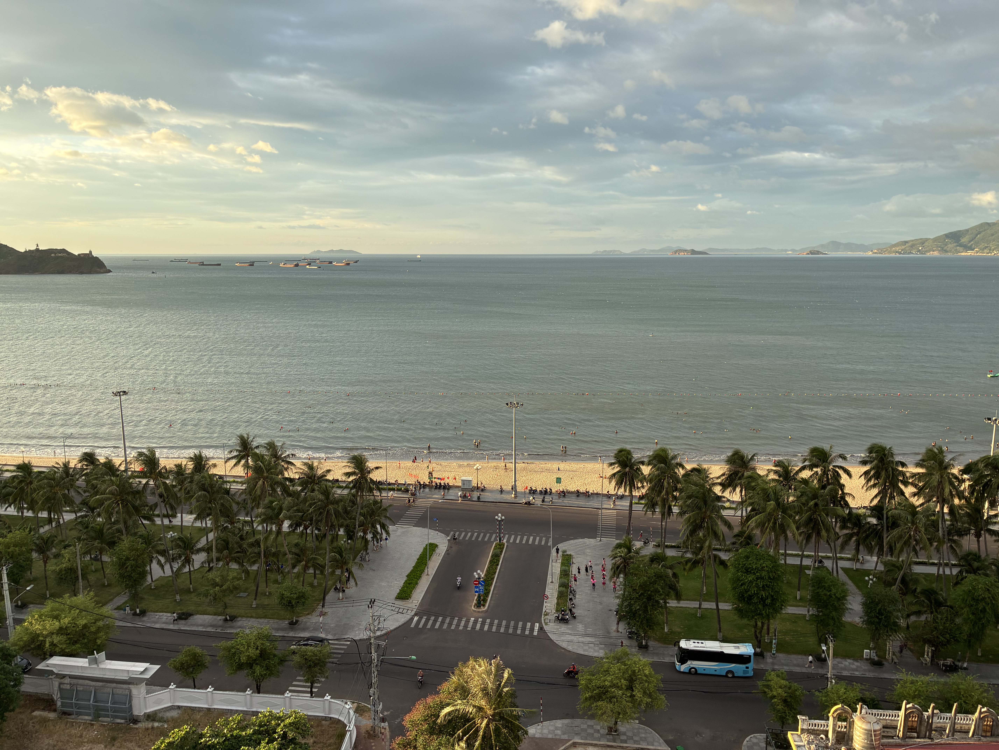
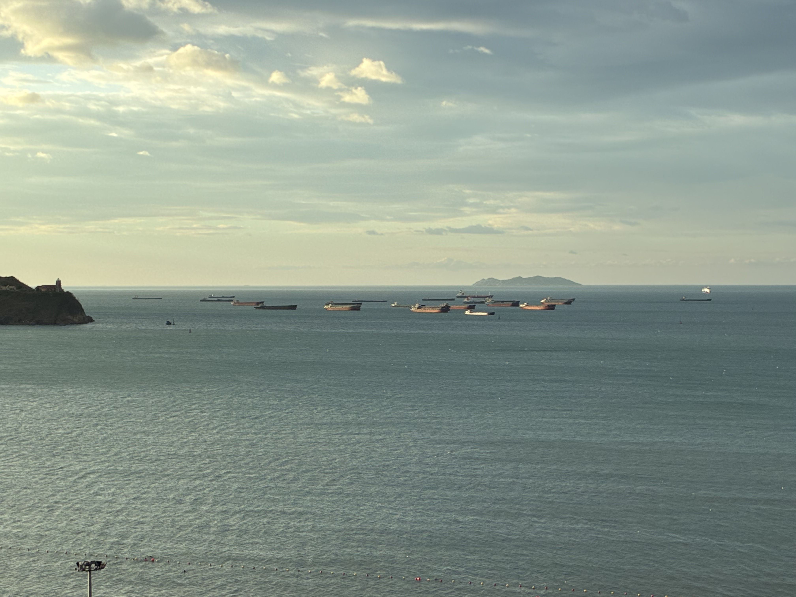
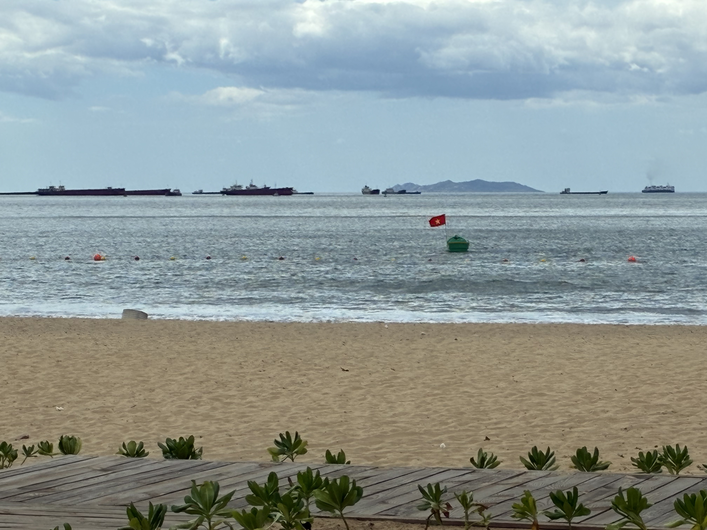
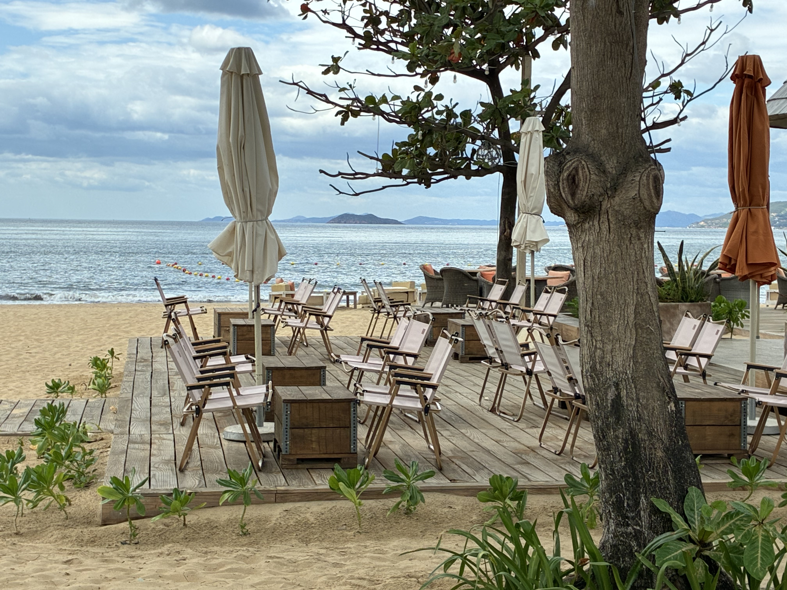
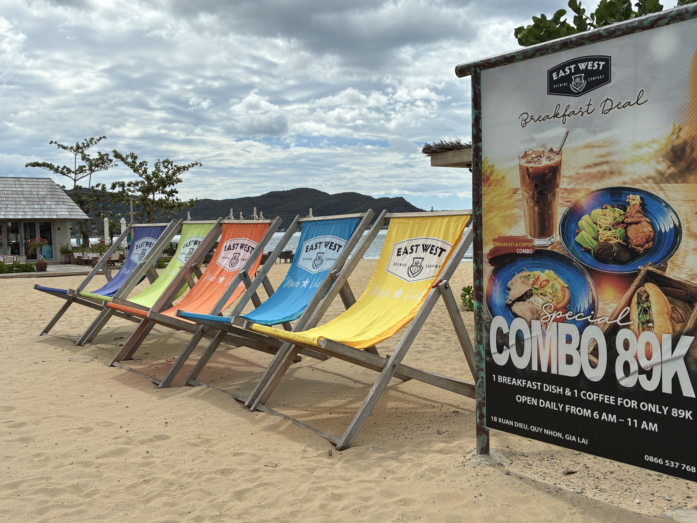
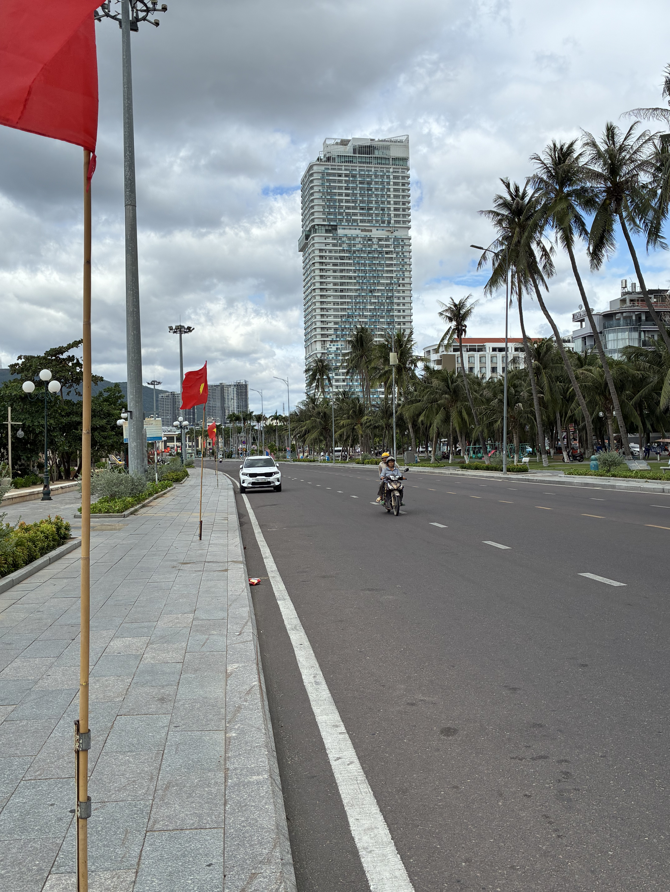
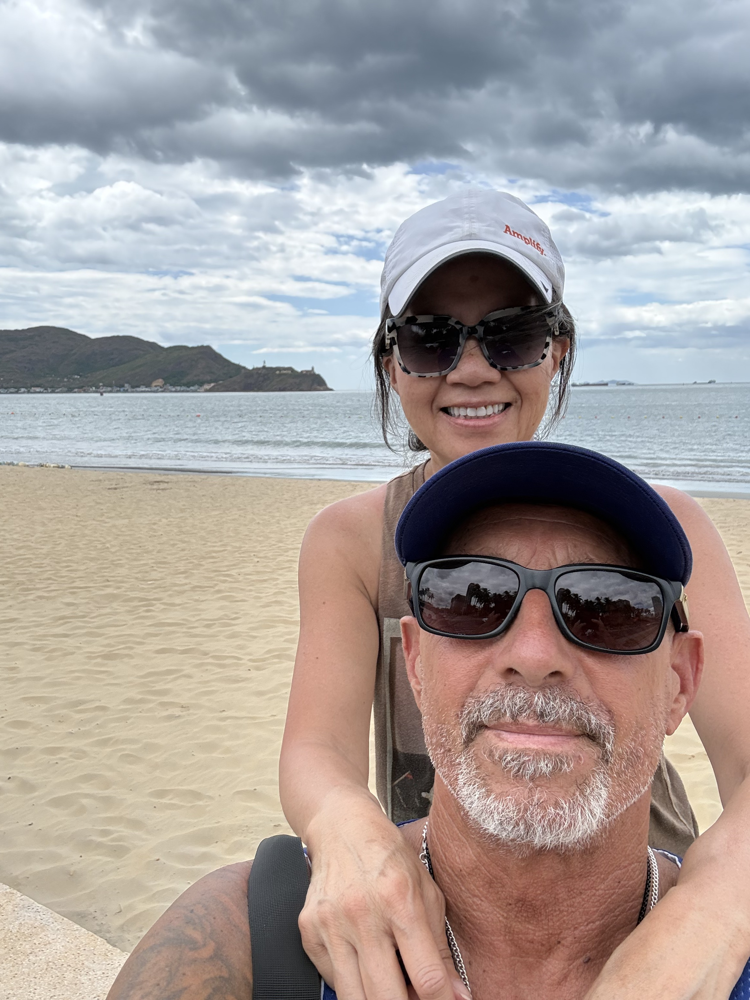